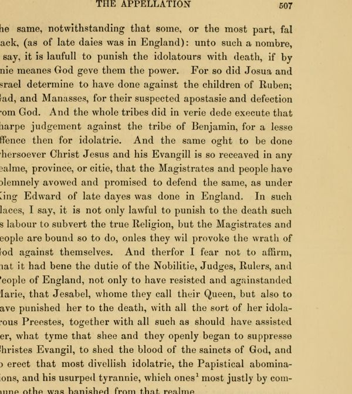
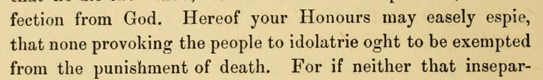
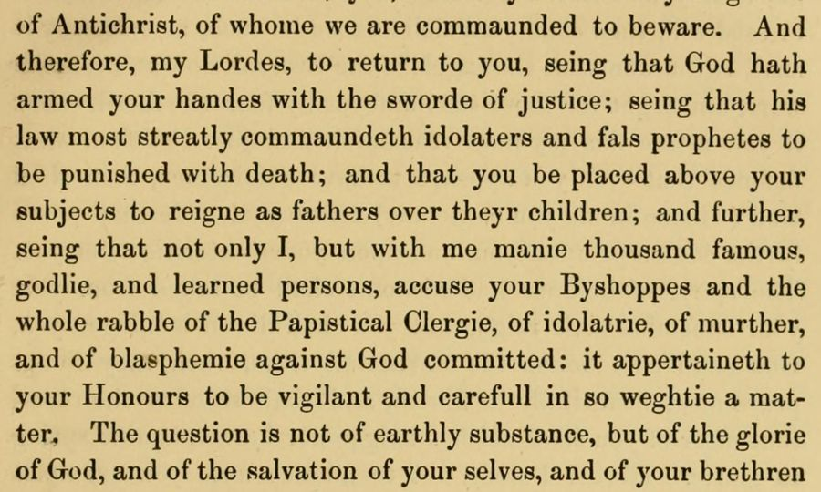

“Marie, that Jesabel, whome they call their Queen” (p. 507)
English: Laing’s edition, vol. IV, p. 507, scan. Original spelling. Highlighted: Lecky’s quotation.

… unto such a nombre, I say, it is laufull to punish the idolatours with death, if by anie meanes God geve them the power. For so did Josua and Israel determine to have done against the children of Ruben, Gad, and Manasses, for their suspected apostasie and defection from God. And the whole tribes did in verie dede execute that sharpe judgement against the tribe of Benjamin, for a lesse offence then for idolatrie. And the same oght to be done whersoever Christ Jesus and his Evangill is so receaved in any realme, province, or citie, that the Magistrates and people have solemnely avowed and promised to defend the same, as under King Edward of late dayes was done in England. In such places, I say, it is not only lawful to punish to the death such as labour to subvert the true Religion, but the Magistrates and people are bound so to do, onles they wil provoke the wrath of God against themselves. And therfor I fear not to affirm, that it had bene the dutie of the Nobilitie, Judges, Rulers, and People of England, not only to have resisted and againstanded Marie, that Jesabel, whome they call their Queen, but also to have punished her to the death, with all the sort of her idolatrous Preestes, together with all such as should have assisted her, what tyme that shee and they openly began to suppresse Christes Evangil, to shed the blood of the saincts of God, and to erect that most divellish idolatrie, the Papistical abominations, and his usurped tyrannie, which ones most justly by commune othe was banished from that realme.
But becaus I can not at this present discusse this argument, as it appertaineth, I am compelled to omitt it to better opportunitie …
Lecky ends at “abominations”, leaving out “and his usurped tyrannie”, that is, the Pope’s; his “devillish” is Laing’s “divellish”.
“None provoking the people to idolatrie oght to be exempted from the punishment of death” (p. 500)
English: Laing’s edition, vol. IV, p. 500, scan n511. Original spelling. Highlighted: the opening of Lecky’s quotation in vol. II, ch. IV, note 59.

… Hereof your Honours may easely espie, that none provoking the people to idolatrie oght to be exempted from the punishment of death. For if neither that insepar[able conjunction] …
Lecky’s note 59 begins here, jumps with “. . . .” to the passage on p. 507 transcribed above (“The whole tribes did in verie dede execute that sharp judgement against the tribe of Benjamin …”), and ends with the appeal on p. 515 below. His reference is “Knox’s Works, Laing’s edition, vol. iv. pp. 500–515”.
“My Lordes … God hath armed your handes with the sworde of justice” (p. 515)
English: Laing’s edition, vol. IV, p. 515, scan n526. Original spelling. Highlighted: Lecky’s quotation.

… of Antichrist, of whome we are commaunded to beware. And therefore, my Lordes, to return to you, seing that God hath armed your handes with the sworde of justice; seing that his law most streatly commaundeth idolaters and fals prophetes to be punished with death; and that you be placed above your subjects to reigne as fathers over theyr children; and further, seing that not only I, but with me manie thousand famous, godlie, and learned persons, accuse your Byshoppes and the whole rabble of the Papistical Clergie, of idolatrie, of murther, and of blasphemie against God committed: it appertaineth to your Honours to be vigilant and carefull in so weghtie a matter. The question is not of earthly substance, but of the glorie of God, and of the salvation of your selves, and of your brethren …
| Knox (Laing, vol. IV, p. 515) | Lecky (vol. II, ch. IV, note 59) |
|---|---|
| his law … commaundeth | His law … commandeth |
| over theyr children | over their children |
| so weghtie a matter | so weightie a matter |
| the salvation of your selves, and of your brethren … | the salvation of yourselves. |
Apart from modernised spellings and lighter punctuation (commas for Knox’s semicolons), Lecky’s words are Knox’s. He stops in mid-sentence, closing it with a full stop after “yourselves”, without a mark of omission.
Further down the rabbit hole
Sources that Lecky cites in the notes next to the ones that cite this page.
- M’Crie, Life of John Knox“One mass is more fearful to me than ten thousand armed enemies”, and the biographer who excused it
- Buchanan, De jure regni apud ScotosBuchanan’s borrowed maxim about king and law
- Buckle, History of Civilization in EnglandWeather and credulity, and the Scottish clergy’s Devil who had been studying for five thousand years
- Henry, The Life and Times of John Calvin, vol. II“Placet mihi Luthero”: Luther signs for the sword
- Neal, The History of the PuritansA boy king signs a death warrant in tears, and the Presbyterians’ heresy law of 1648
- Hallam, Literature of Europe and Constitutional HistoryHow Lecky quotes Hallam on persecution


Backlinks
Every place in Rationalism in Europe that links to this page (generated automatically when the site is built).